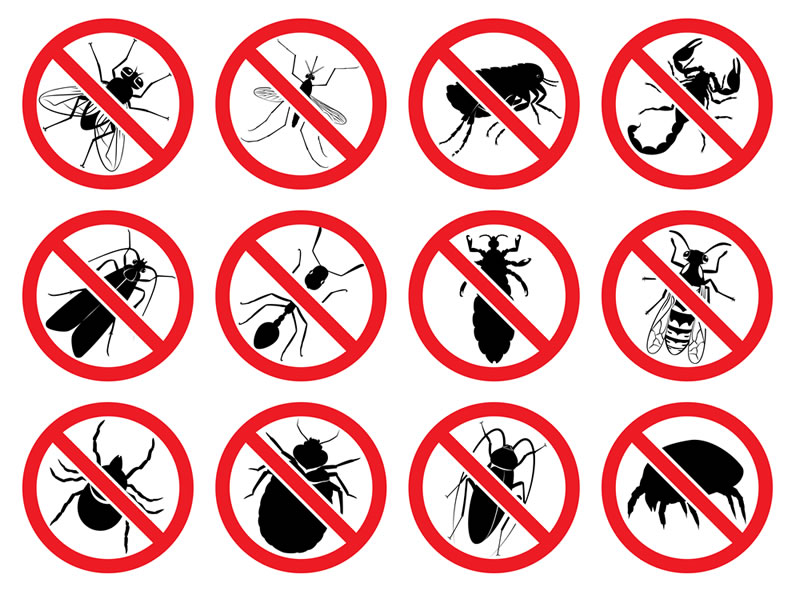
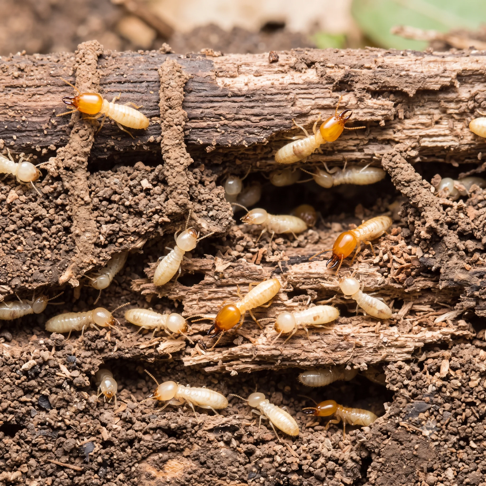

Prevenção
Quando é hora de chamar uma dedetizadora?
Reconheça os sinais de infestação e entenda por que a avaliação do ambiente faz diferença.
Ler artigoBlog Orlandini · Prevenção e cuidado
Entenda os sinais das pragas urbanas e descubra cuidados que ajudam a proteger sua casa e seu negócio.

Prevenção
Reconheça os sinais de infestação e entenda por que a avaliação do ambiente faz diferença.
Ler artigoCuidados em casa
Uma rotina de prevenção para cozinhas, áreas de serviço e outros pontos de atenção.
Ler artigo
Identificação
Saiba o que observar e quais cuidados tomar antes de mexer em móveis ou estruturas.
Ler artigo